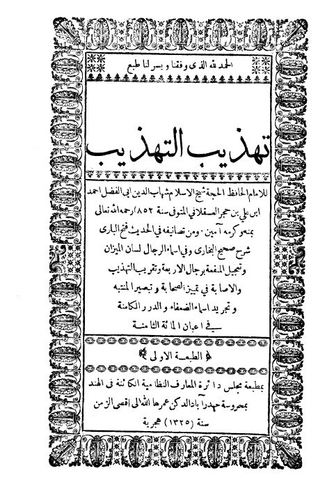
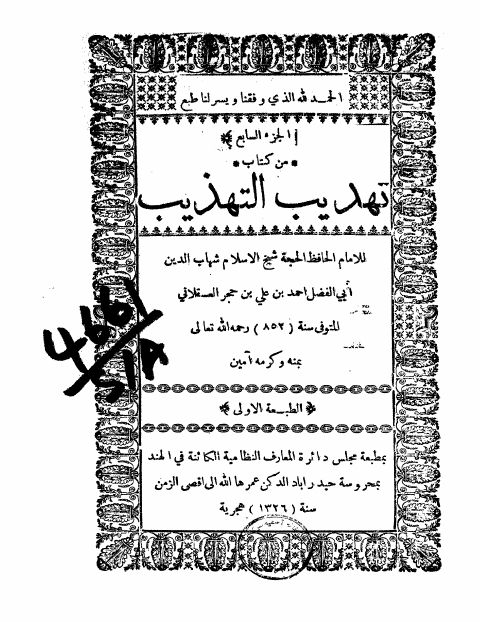
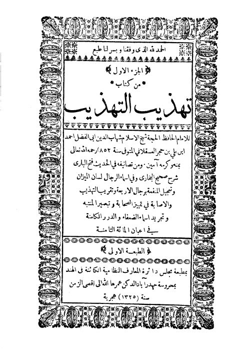
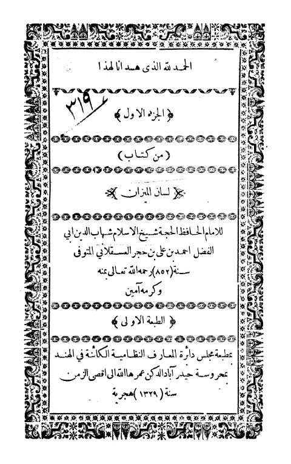
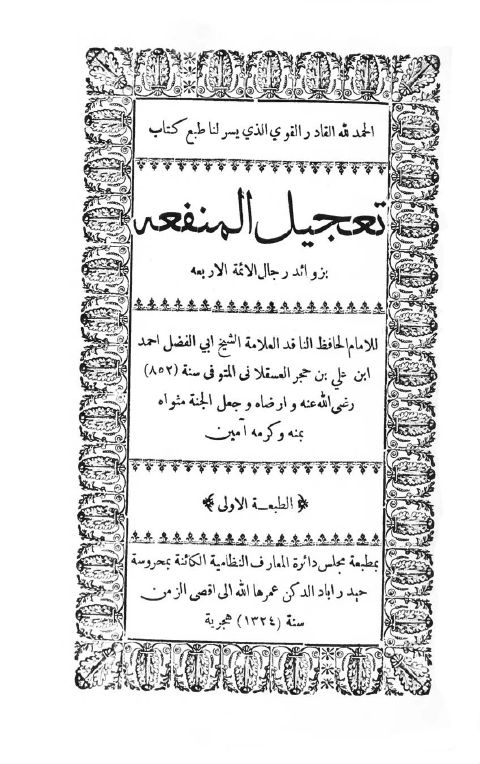
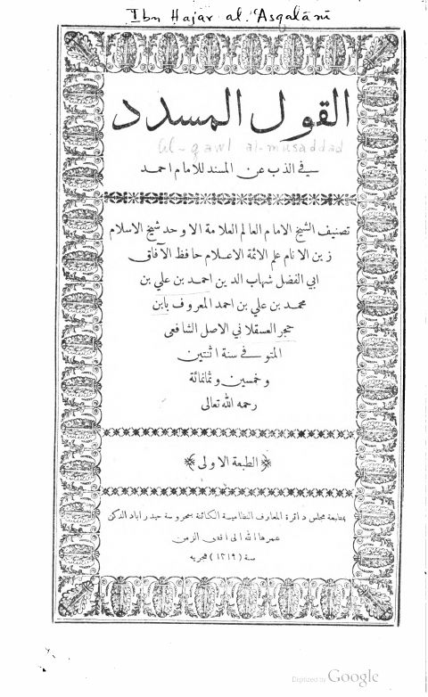
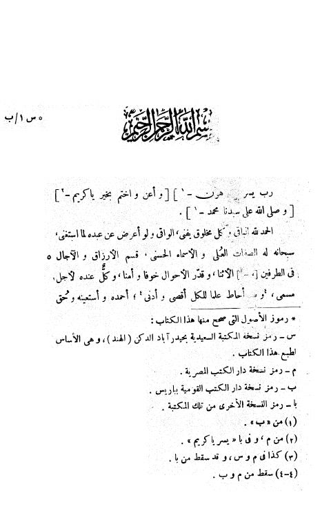
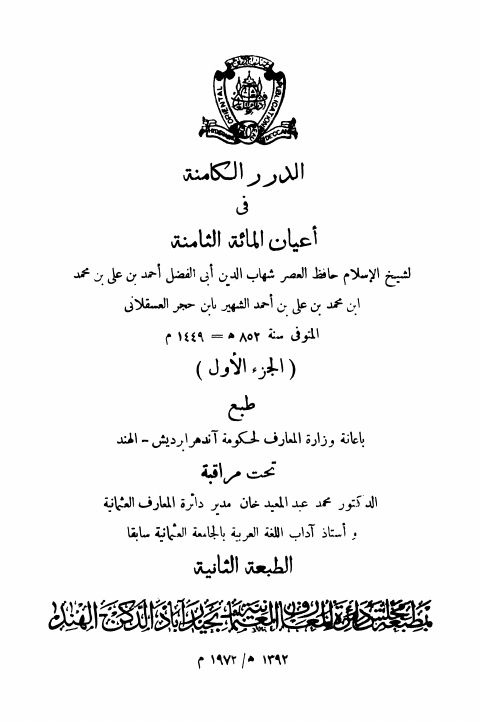

دائرة المعارف النظامية
Publisher
Resources

تهذيب التهذيب- ط هندية تهذيب التهذيب- ط هندية أحمد بن محمد بن علي بن حجر العسقلاني
تهذيب التهذيب تهذيب التهذيب أحمد بن محمد بن علي بن حجر العسقلاني
تهذيب التهذيب- ط الهند تهذيب التهذيب- ط الهند أحمد بن علي بن حجر العسقلاني
لسان الميزان لسان الميزان أحمد بن علي بن حجر العسقلاني
تعجيل المنفعة بزوائد رجال الأئمة الأربعة تعجيل المنفعة بزوائد رجال الأئمة الأربعة أحمد بن علي بن حجر العسقلاني
القول المسدد في الذب عن المسند للإمام أحمد- دائرة المعارف القول المسدد في الذب عن المسند للإمام أحمد- دائرة المعارف أحمد بن علي بن حجر العسقلاني
إنباء الغمر بأبناء العمر- ط العثمانية إنباء الغمر بأبناء العمر- ط العثمانية شهاب الدين أبي الفضل أحمد بن علي بن حجر العسقلاني
الدرر الكامنة في أعيان المائة الثامنة -المعارف العثمانية- أجزاء الدرر الكامنة في أعيان المائة الثامنة -المعارف العثمانية- أجزاء أحمد بن محمد بن علي بن حجر العسقلاني الدرر الكامنة في أعيان المائة الثامنة -المعارف العثمانية- مدمجة
الدرر الكامنة في أعيان المائة الثامنة -المعارف العثمانية- مدمجة
أحمد بن محمد بن علي بن حجر العسقلاني
الدرر الكامنة في أعيان المائة الثامنة -المعارف العثمانية- مدمجة
الدرر الكامنة في أعيان المائة الثامنة -المعارف العثمانية- مدمجة
أحمد بن محمد بن علي بن حجر العسقلاني